Reported command flows passed on the exact delivery APK, at 1280×800 and 1080×600. Finite emulator coverage; physical/HQ/audio and native Save/Load limits remain.
APK SHA-256: 2bc1fee640277eacacfd21f8c9d4b72fc19a23c304461f5c026efb0b71f20441
Full conditions, fixtures and remaining limits · Artifact-bound gate
| Issue | Fix and verification | Proof |
|---|---|---|
| BUILD only selected trucks | Header BUILD now opens the structure menu; PLACE STRUCTURE activates the chosen native tool. | Evidence |
| Wrong structure after choosing a card | Corrected native row coordinates and the Tank Traps catalogue collision; native saved orders confirm the chosen structure. | Evidence |
| Only part of a nearby constructor group selected | Connected local grouping includes the opposite edge of the same area. One edge truck expands to all fifteen. | Evidence |
| TRUCKS used the previous camera location | Wait for fresh terrain projection after reactivating its observer; camera-switch selection is exercised in the large-group fixture. | Evidence |
| Queued construction invisible / stale neon preview | Original native green blueprints show accepted future sites; three real structures complete and placement exits automatically. | Evidence |
| Placement closed between queued buildings | Require sustained native idle time; a brief gap between sites no longer exits placement before the last structure completes. | Evidence |
| Trucks and combat units could not be selected/moved | Battlefield touch selection, nearby TRUCKS, ALL UNITS, BOX, MOVE, PATROL and STOP verified against native orders/positions. | Evidence |
| Unpolished grey component popup | Three button-based component steps and a persistent blueprint summary replace visible native selectors. | Evidence |
| First SAVE click sometimes ignored | Name changes no longer rebuild and destroy the SAVE button during pointer-down; actual first-click save tested. | Evidence |
| Factory clutter and narrow rows | Facility rail, full-width unit rows, explicit quantities and a live queue; selected blueprint remains first. | Evidence |
| Saved draft reopened with disabled save controls | Header DESIGN revalidates a complete saved draft without requiring another edit; checked by actual native validation at both sizes. | Evidence |
| Unavailable saved parts were lost during a name edit | The draft retains locked component identities; native research validation still prevents unavailable production. Deterministic draft regression covers this. | Evidence |
| Manufactured blueprints cluttered Factory with internal IDs | Generated copies of saved blueprints no longer add duplicate rows; stock constructors remain accessible and internal factory suffixes are hidden. | Evidence |
| Stock designs showed empty internal components | Hide default ZNULL systems and show the three meaningful constructor components. | Evidence |
| MORE hid important controls | MORE removed. Field commands remain visible; Commanders/control sizes moved to Help. | Evidence |
| Top banner shifted/clipped after page/keyboard returns | Fixed root overflow and measured wrapping header; actual keyboard and repeated returns checked at both sizes. | Evidence |
| Returning from production corrupted the battlefield | Real tank/truck production followed by field selection, movement and repeated page returns at both sizes. | Evidence |
| Large building and module path needed verification | Chosen 2×2 Factory and Factory Module completed in the native engine. | Evidence |
| Research must stay unchanged | All 408 research-named APK files are identical; TECH open/close retested. | Evidence |
| Build/scripts were mistaken for gameplay evidence | Exact installed APK hashes, Android touches, screenshots, native save orders/completion/positions and actual wave weapon firing form the final gate. | Evidence |
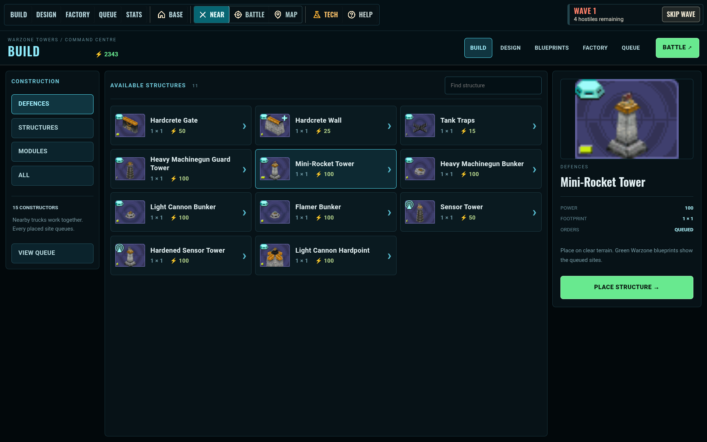
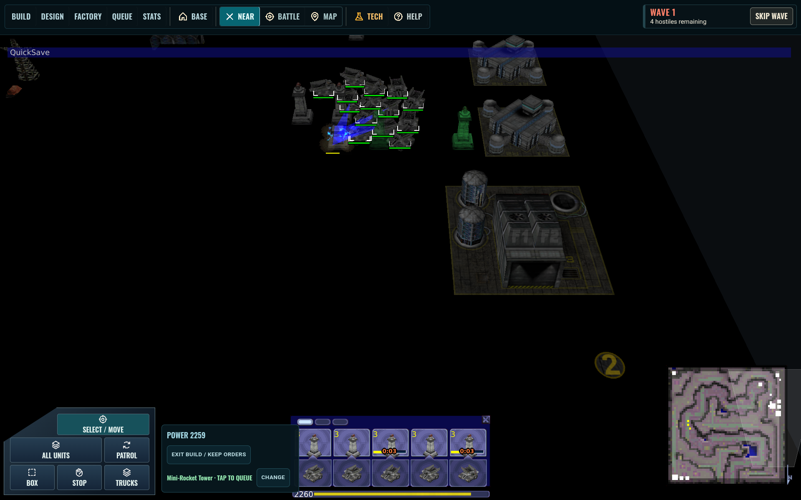
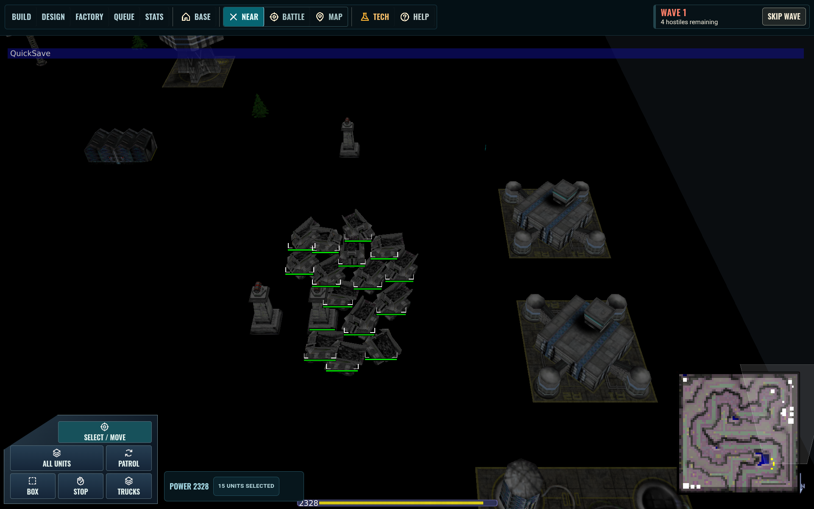
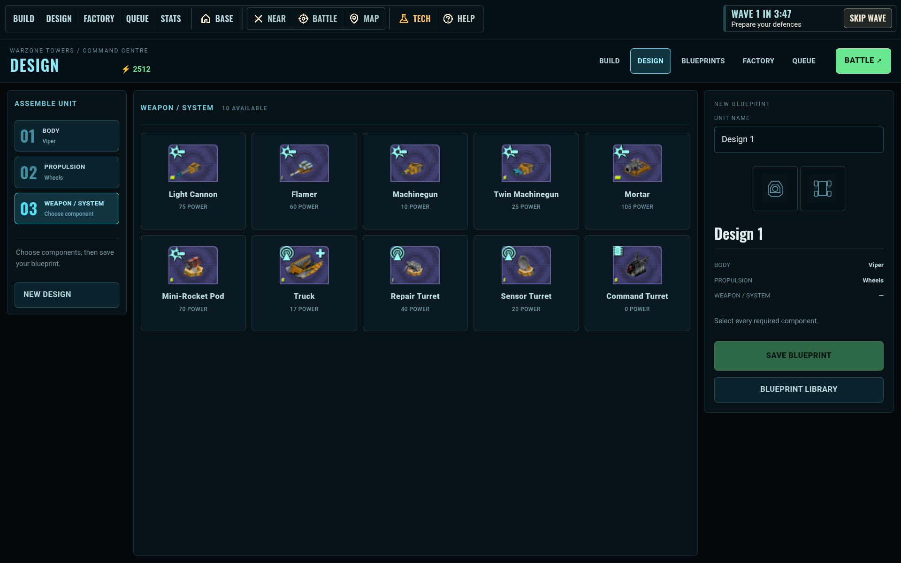
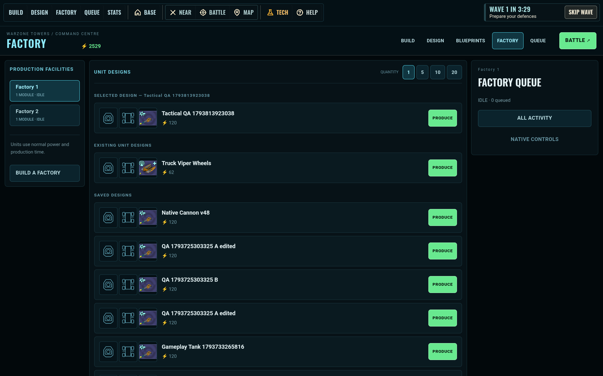
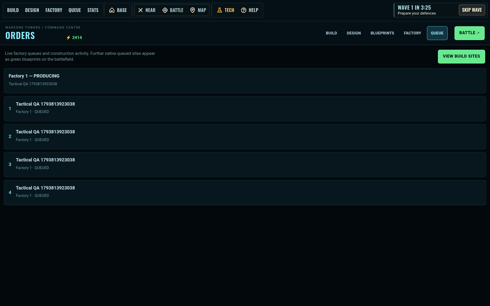
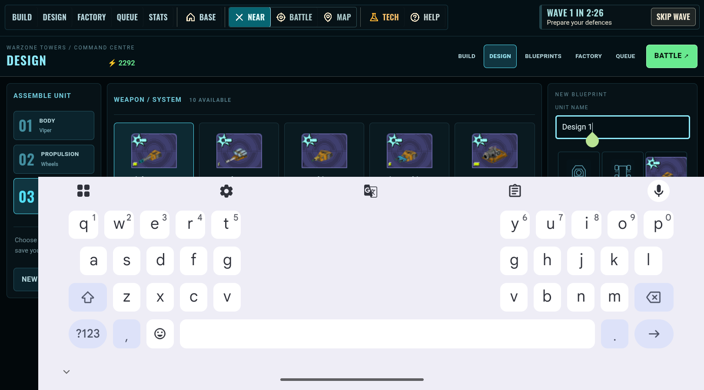
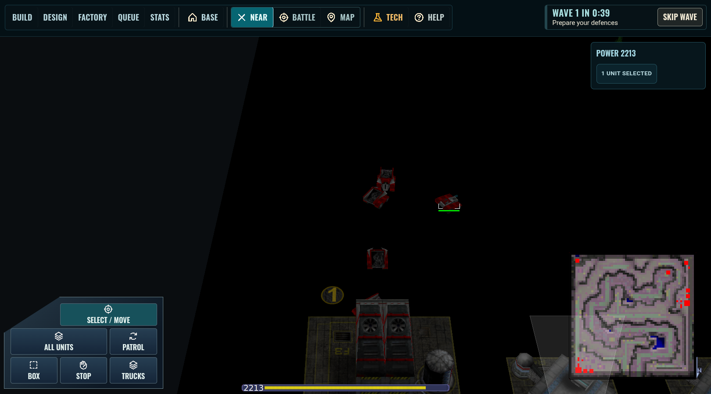
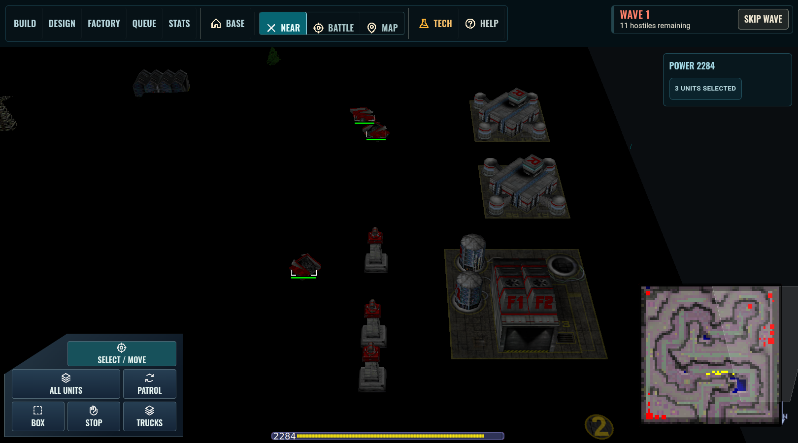
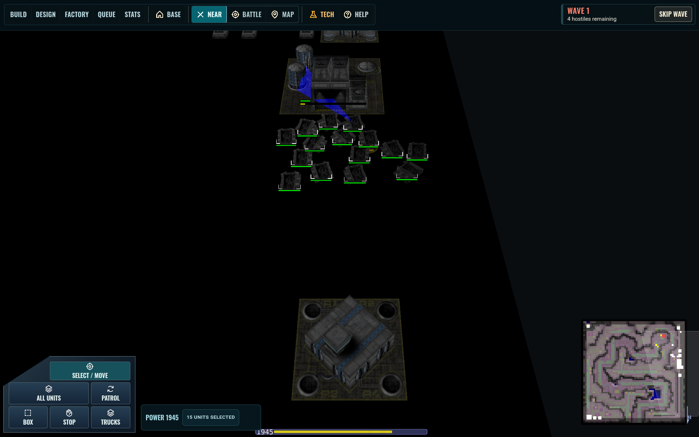
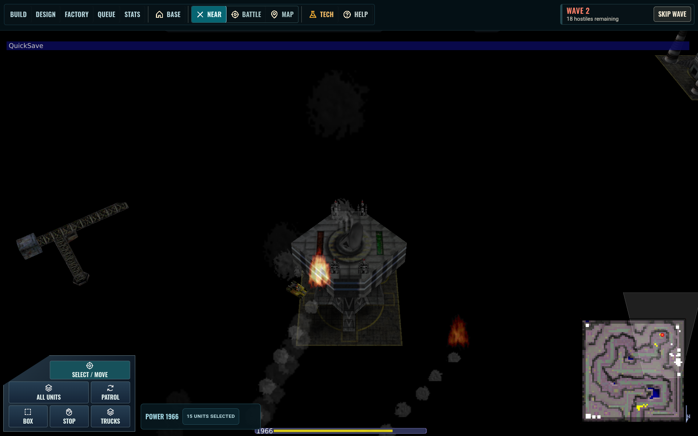
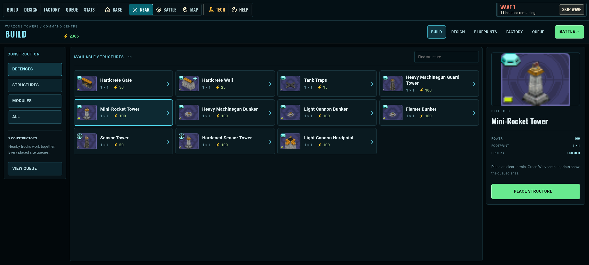
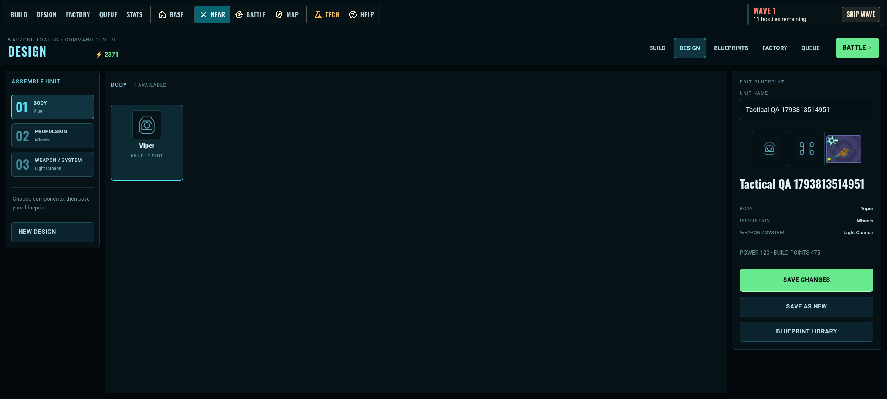